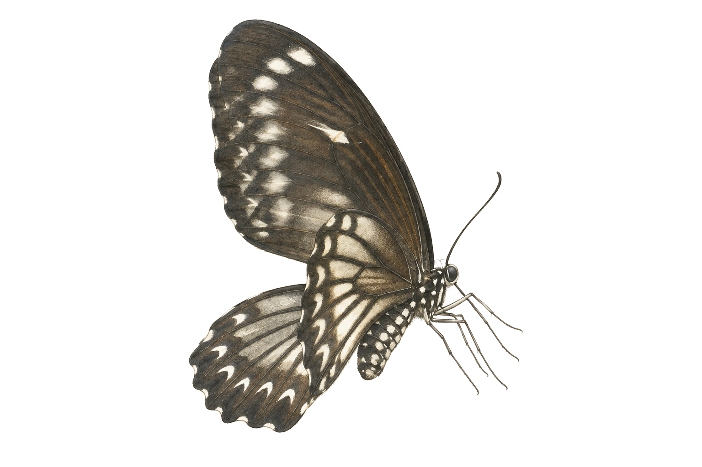

Papilionidae · 016 / 165
কমন র্যাভেন
Papilio castor

বৈশিষ্ট্য ও শনাক্তকরণ
গাঢ় ডানায় সাদা দাগ থাকে, লেজ নেই। স্ত্রী ও পুরুষের নকশা আলাদা।
স্ত্রী ও পুরুষের পার্থক্য
স্ত্রীর ডানার নিচে বাইরের ধার ঘেঁষে সাদা বিন্দুর সারি দেখা যায়।
আকার
সামনের এক ডানার দৈর্ঘ্য ৪২–৫০ মিমি; তাইওয়ানের formosanus উপপ্রজাতির বিবরণ। ওকিনাওয়ায় সংগৃহীত নমুনার নিজস্ব সীমা নয়।
ওকিনাওয়ার দ্বীপে রেকর্ড
স্থানীয় সূত্রে উল্লিখিত দ্বীপের রেকর্ড নিচের সূত্রে দেখুন। ইয়োনাগুনিতে ২০০০ সালের ২৬ জুলাই সংগৃহীত একটি পুরুষকে জাপানের প্রথম রেকর্ড হিসেবে প্রতিবেদন করা হয়।
আবাসস্থল
দ্বীপের রেকর্ড আবাস-তালিকায় দেখুন। ওকিনাওয়ায় দীর্ঘমেয়াদি আবাস-পছন্দের বিস্তারিত নিশ্চিত হয়নি।
জীবনযাপন ও অতিরিক্ত তথ্য
এখানে বিরল আগন্তুকের রেকর্ড হিসেবে অন্তর্ভুক্ত। শুধু কালো ডানায় সাদা দাগ দেখেই শনাক্ত করা যথেষ্ট নয়।
শূককীট ও খাদ্য উদ্ভিদ
বিভিন্ন অঞ্চলের খাদ্যতালিকায় Murraya ও সংশ্লিষ্ট গাছের উল্লেখ আছে। এর অর্থ ওকিনাওয়ায় নিয়মিত শূককীট পাওয়া যায় না।
তথ্যসূত্র ও সহায়ক পাঠ
- 日本の蝶：アゲハチョウ科（雌雄差）
ডেটায় উল্লেখিত সূত্র দেখার তারিখ: 2026-11-10 - 沖縄蝶類生態図鑑：オナシモンキアゲハ
ডেটায় উল্লেখিত সূত্র দেখার তারিখ: 2026-11-10 - 台湾農業部：無尾白紋鳳蝶
ডেটায় উল্লেখিত সূত্র দেখার তারিখ: 2026-11-10 - 台湾蝶類誌：前翅長42–50mm
ডেটায় উল্লেখিত সূত্র দেখার তারিখ: 2026-11-10
তথ্য সরবরাহকৃত ডেটার উপর ভিত্তি করে তৈরি (হালনাগাদ: ১০ নভেম্বর ২০২৬)। কোনো দ্বীপের রেকর্ড সেখানে বর্তমান স্থায়ী বসবাস বা সহজে দেখা পাওয়ার নিশ্চয়তা নয়। চিত্র নির্দেশক; শনাক্তকরণে বাস্তব নমুনা ও সূত্র মিলিয়ে দেখুন।